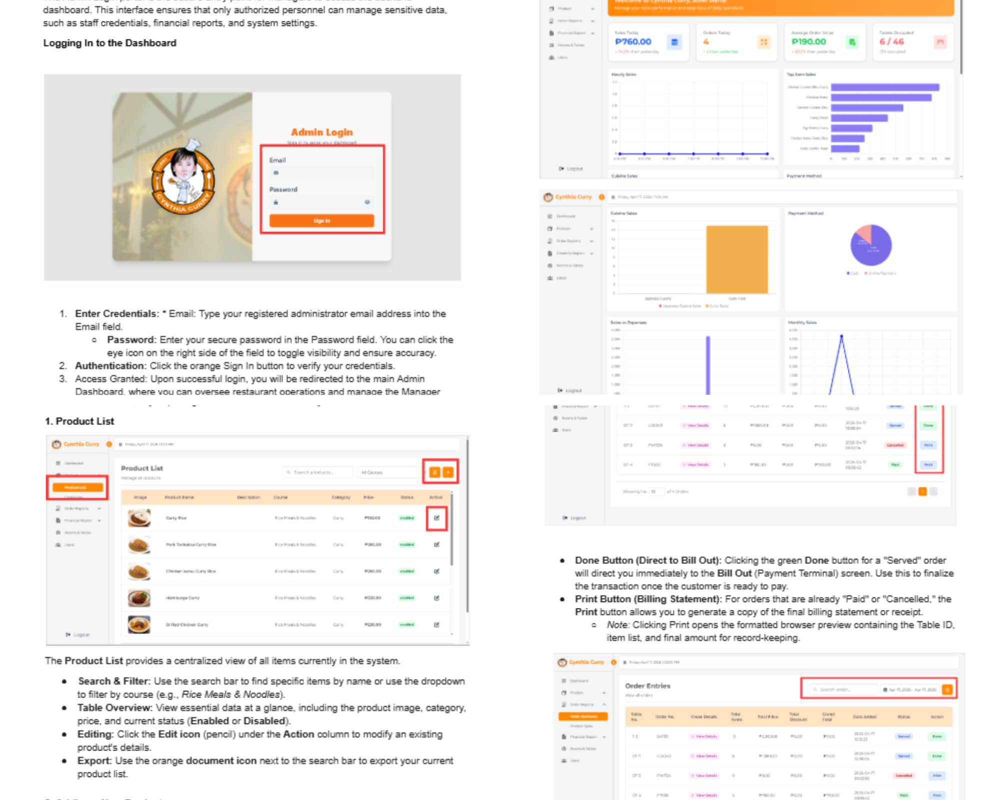
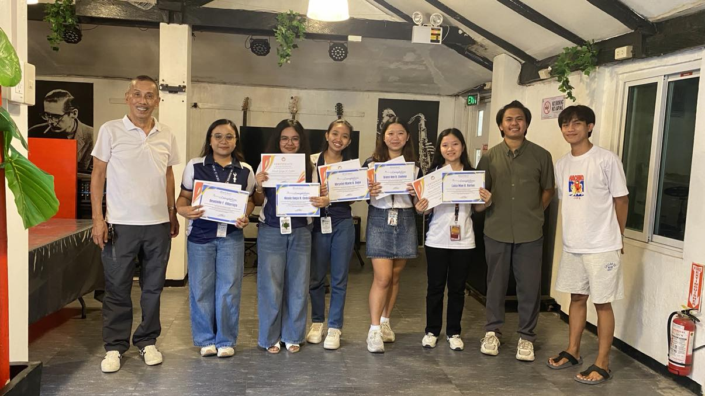
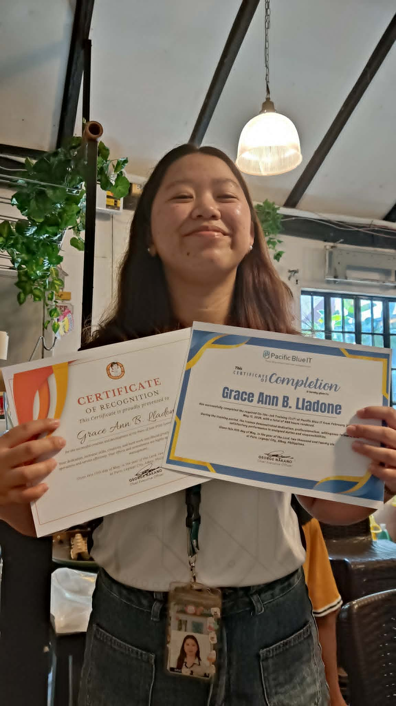

During this week, my main responsibility was preparing the user manual for the admin side of the POS system. I organized the different features, functions, and workflows used in the administrative section so the documentation would be easy to follow for future users.
I created step-by-step instructions for the important admin processes, including product management, category handling, reports, and other core system tasks. To make the manual more helpful and easier to understand, I arranged supporting screenshots and matched them with the correct procedures and page descriptions.
As I worked on the manual, I also reviewed the navigation flow of the admin interface to ensure the instructions reflected the actual system structure. I refined the wording, organized the content into clear sections, and added details that could help users move through the system with less confusion.
This week improved my technical documentation skills and strengthened my understanding of how to create clear and user-friendly guides for system users. It also helped me appreciate the importance of accurate manuals in supporting efficient day-to-day system operation.


